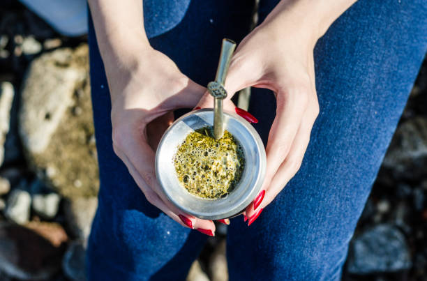

A puro mate es un emprendimiento que se dedica hace dos años a la vente de una increíble gama de productos relacionados a la cultura del mate argentino
Tradicional mate argentino

¿Todavía no sabes como preparar un mate? a continuación en el video te mostramoss como!